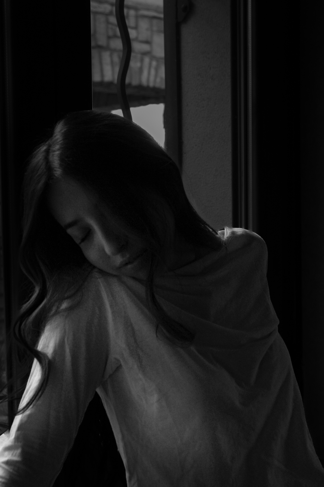
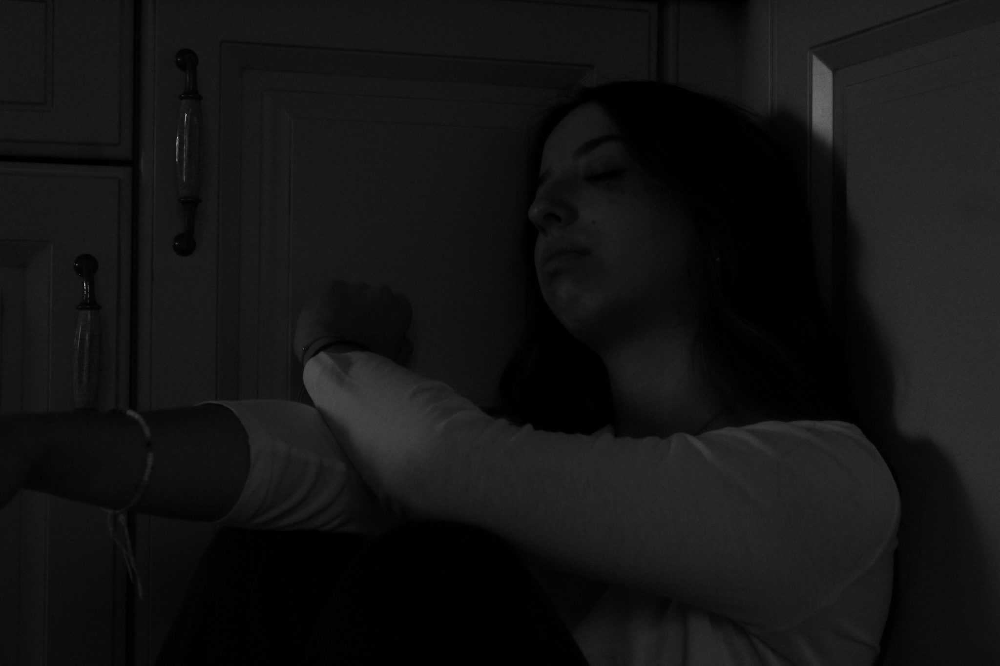
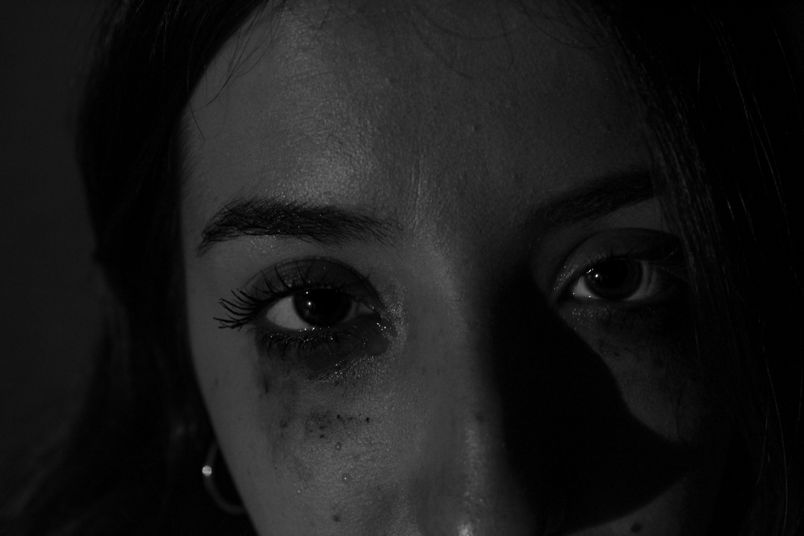
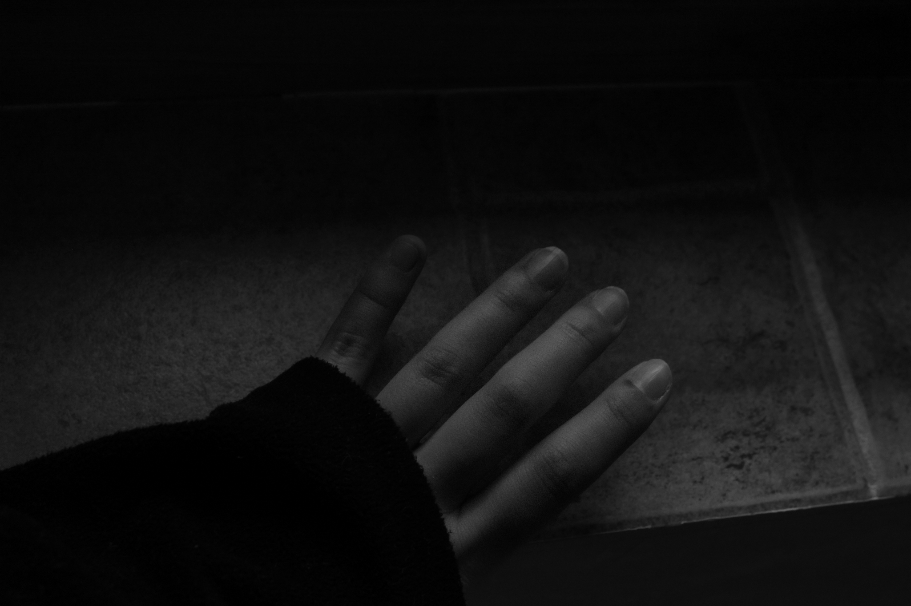
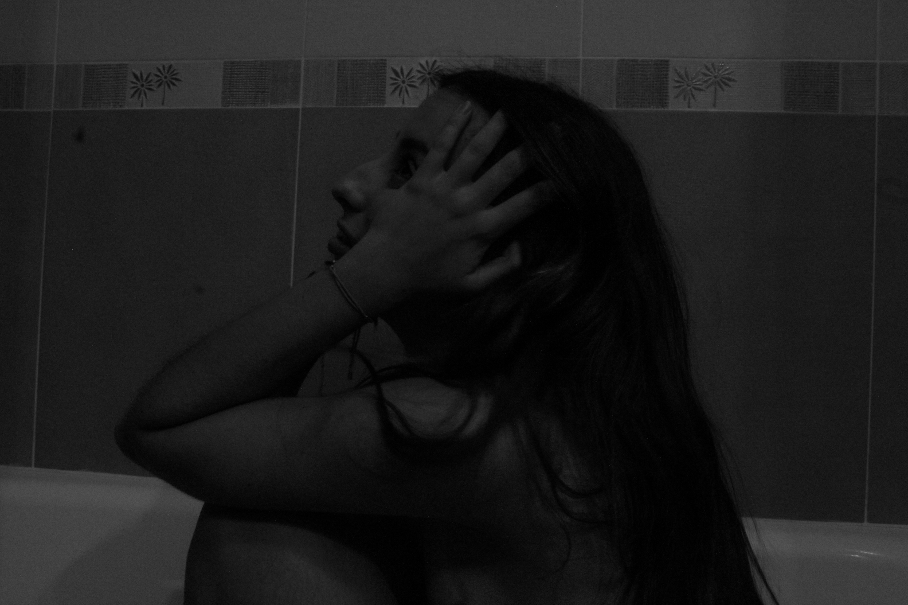
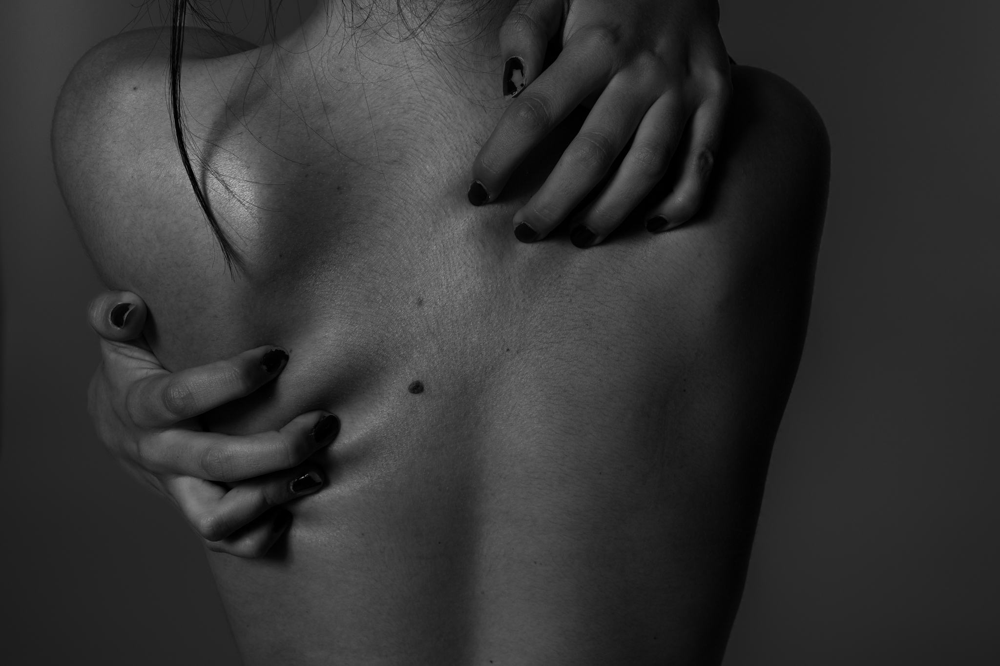

Capturing the silence that follows a panic attack, where the world feels distant and the fog begins to settle, turning every familiar space into an unknown territory.





In the absence of color, emotions speak louder. Each shadow represents a weight carried in silence, a part of the self that remains unseen by the casual observer.


Acceptance is not a destination, but a slow walk through the dark. It is the moment we stop fighting the tide and start learning how to breathe underwater.






"Sometimes, the bravest thing we can do is to acknowledge the shadows, for only then can we begin to see the light that has always been there."